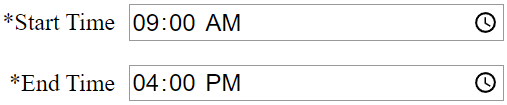

Main Event
Altitude your altimeter is set to perform main parachute deployment. Value should be feet above ground level.

GPS DriftCast estimates rocket landing locations. Required inputs are marked with an asterisk *. Filling in just these fields will provide a rough estimate. The more information you are able to provide, the better the results will be.
This section is used to identify where the place where the rocket will be launched. Commonly used sites can be saved for easier use in the future.
Latitude and Longitude coordinates of the rocket's launch location are the only required fields for this section. Club hosted launches often share these values. They can also be found in most mapping software.
An example from Google Maps can be veiwed below. Simply left click on the location to place a marker on the map. A window will popup showing the latitude and longitude.
High power launches in the USA must request a waiver from the FAA. These define a volume of airspace that all rockets should stay inside. GPS DriftCast can draw the waiver's outline in the Google Earth KML output files. You will need to get the latitude, longitude, and radius from the club that obtained the waiver.
Launch sites can be saved to avoid entering their coordinates in the future.
Each must be given a unique Name. Latitude and Longitude are also required. Waiver information is optional.
Simply click the Save button at the bottom of the Location section when the data is ready.
All previously saved launch sites will be shown in the drop down list at the top of the Location section. Simply select a different name from that list to load that launch site's data. All input fields will be automatically filled with the data saved with that name.
You can set up a different launch site by clicking the New button.
All of the data fields will switch to their default values. They will also be editable to accept the new site's values. Click the Save button if you want to remember this launch site.
Or click the Cancel button if you decide the launch site is not worth saving.
This is also a good way to obtain landing locations for a launch site you may only visit once.
All launch data fields are disabled for saved sites. If you need to change a value, begin by clicking the Edit button.
The data fields will now be switched to editing mode. To save the modifications, simply click the Save button.
If you instead realize the launch site was already perfect, simply click the Cancel button.
Everything will go back to the way it was before triggering edit mode.
Losing a launch site due to land development is an all too often occurance due to urban sprawl. Removing a launch site can be accomplished by clicking the Delete button.
A dialog will ask you to verify the deletion to ensure it was not an accidental click.
This section collects details about the launch being simulated. Most of the fields are required. The only optional data deals with dual deployment recovery systems.
This is the date on which your rocket will be launched. Data entry method will depend on your browser and operating system.
Allowed dates are based on availability of wind forecast data. Future dates are limited to 14 days from the current day. Only one day in the past is supported.
This identifies what times of day the launch begins and completes. Drift will be calculated for both times along with each hour in between.
A maximum of 12 hours for a single launch are allowed. Wind forecasts are only available for 12 hours into the past.
This section collects flight details about your rocket. Certain fields are only required if you are using a dual deployment recovery system.
The highest altitude your rocket is expected to reach during this launch. Value should be feet above ground level.
What speed your rocket is expected to descend. This is based on the weight and parachute size. Simulation software such as OpenRocket and Rocksim can help calculate it. Values should be in feet per second.
The highest altitude your rocket is expected to reach during this launch. Value should be feet above ground level.
The speed your rocket is expected to descend after the main parachute is deployed. This is based on the weight and parachute size. Simulation software such as OpenRocket and Rocksim can help calculate it. Values should be in feet per second.
Altitude your altimeter is set to perform main parachute deployment. Value should be feet above ground level.
The speed your rocket is expected to descend while only the drogue parachute is deployed. This is based on the weight and parachute size. Simulation software such as OpenRocket and Rocksim can help calculate it. Values should be in feet per second.
Rockets often turn into the wind after leaving the launch pad. This behavior is called weathercocking. The amount of turning changes based on the rocket's stability margin, wind speed, and liftoff velocity. More information can be found on the NASA Glenn Research Center website.
You can decide if weathercocking is applied to your drift calculations. It is turned off by default for a perfectly vertical simulation. If you wish to proceed, begin by checking the "Apply Weathercocking" box.
A series of input fields will become visible as a result. You will need to provide upwind distance and apogee values for certain wind speeds. They can be produced from multiple runs of a rocket simulation package.
Run Rocksim or OpenRocket using wind speeds between 0 and 20 mph in 5 mph increments.
Make sure to enter the appropriate launch angle in your simulations. Rocksim uses negative angles for into the wind.
Run your simulation. Next plot "Altitude vs Range" in a graph.
Enter the max range in feet of the rocket near apogee into the Distance field of the matching wind speed.
Enter the max altitude in feet above ground level of the rocket into the Apogee field of the matching wind speed.
Do this for all 5 wind speeds. It is assumed that 0 mph wind speed result is provided as the rocket's maximum in the Launch section.
Make sure to enter the appropriate launch angle in your simulations. OpenRocket uses positive angles for into the wind.
Run your simulation. Next plot "Altitude vs Position North of field" in a graph.
Enter the max position northof field in feet of the rocket near apogee into the Distance field of the matching wind speed.
Enter the max altitude in feet above ground level of the rocket into the Apogee field of the matching wind speed.
Do this for all 5 wind speeds. It is assumed that 0 mph wind speed result is provided as the rocket's maximum in the Launch section.
Click on the Calculate Drift button when all of your data is ready.
Note any previous drift results are deleted when a new calucation begins.
The drift calculation results are provided in several formats. Each type offers unique benefits depending on your needs.
Launch site and landing locations are displayed on a static map image.
A red marker is placed at the launch site. Each landing location is identified by yellow marker with the associated hour provided as a numeric value.
Additional details of the drift calculations are provided in a table format for easy viewing.
Time identifes the hour from your launch window associated with the other data displayed in this row. This will match one of the map marker icons.
Model names the forecast model used to generate the wind data. Note only Open-Meteo is currently available due to NOAA recently removing access to their RAP forecasts for continental USA.
Average Surface Wind is based on data between 0 and approximately 500 feet Above Ground Level (AGL) for flights with an apogee below 1000 feet. It uses values up to 1000 ft for flights exceeding 1000 ft AGL.
Speed is displayed in miles per hour. Background color changes from green at 0 MPH to red at the rocketry saftey code limit of 20 MPH.
Direction is based from 0° as North. Note this is where the wind originates, not the direction it is blowing toward.
Apogee is the rocket's estimated maximum height reached based on weathercocking.
Weathercock indicates how far upwind the rocket travels in feet due to turning into the wind.
Landing estimates the distance in feet away from your launch site the rocket is calculated to land.
More detailed mapping is provided through KML files which can be viewed in Google Earth. This software is available for free as a Web App and a downloadable Desktop version.
Two versions of the drift calculations are available. Simply click the Save Landing Plots or Save Flight Plots button depending on which best matches your needs. Descriptions of both are provided below.
This will trigger a File Save dialog. Provide a name and location of your choosing. Note that leaving the default values will overwrite any previously saved files.
The landing plot files contain the same basic information as displayed in the static map image. The main benefit is an ability to rescale and move your viewpoint around to better visualize your landing locations in relation to ground hazards. A series of map markers with labels identifying the simulated time will be displayed.
The flight plot files contain additional information used to draw the entire path traversed by the rocket. In addition to viewing the height above ground throughout a launch, changes in dual deployment descent rates are visually represented.
A line along the surface identifies where to expect the rocket in relation to ground features at any time during descent. Hopefully this assists with planning to avoid known ground hazards.
{kind=link}
{kind=link}
{kind=link}